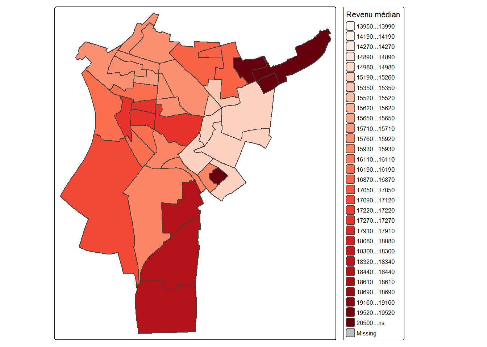

library(sf)
library(tmap)
iris <- st_read("data/iris.shp")## Reading layer `iris' from data source
## `C:\Users\fchri\OneDrive\Bureau\One Drive de Lylia Christory\OneDrive\Documents\projet-geomatique\data\iris.shp'
## using driver `ESRI Shapefile'
## Simple feature collection with 614 features and 30 fields
## Geometry type: MULTIPOLYGON
## Dimension: XY
## Bounding box: xmin: 2.28833 ymin: 48.80725 xmax: 2.603314 ymax: 49.01233
## Geodetic CRS: WGS 84revenus <- st_read("data/revenus.gpkg")## Reading layer `saint_denis_revenus' from data source
## `C:\Users\fchri\OneDrive\Bureau\One Drive de Lylia Christory\OneDrive\Documents\projet-geomatique\data\revenus.gpkg'
## using driver `GPKG'
## Simple feature collection with 39 features and 35 fields
## Geometry type: MULTIPOLYGON
## Dimension: XY
## Bounding box: xmin: 651140.9 ymin: 6867026 xmax: 655918.4 ymax: 6872629
## Projected CRS: RGF93 Lambert 93iris_sd <- iris[
iris$Nom_Officie.7 == "['Saint-Denis']",
]revenus <- st_transform(
revenus,
st_crs(iris_sd)
)jointure <- st_join(
iris_sd,
revenus
)names(jointure)## [1] "Annee" "Code_Offici" "Nom_Officie" "Code_Offici.1" "Nom_Officie.1"
## [6] "Code_Offici.2" "Nom_Officie.2" "Code_Offici.3" "Nom_Officie.3" "Code_Offici.4"
## [11] "Nom_Officie.4" "Code_Offici.5" "Nom_Officie.5" "Code_Offici.6" "Nom_Officie.6"
## [16] "Code_Offici.7" "Nom_Officie.7" "Code_Offici.8" "Nom_Officie.8" "Code_Offici.9"
## [21] "Nom_Officie.9" "Nom_Officie.10" "Nom_Officie.11" "Code_Iso_31" "Type"
## [26] "Code_Grand_" "Libelle_Gra" "Fait_Partie" "Code_Offici.10" "Nom_Officie.12"
## [31] "INSEE_COM" "NOM_COM" "IRIS" "CODE_IRIS" "NOM_IRIS"
## [36] "TYP_IRIS" "DISP_TP6021" "DISP_INCERT21" "DISP_Q121" "DISP_MED21"
## [41] "DISP_Q321" "DISP_EQ21" "DISP_D121" "DISP_D221" "DISP_D321"
## [46] "DISP_D421" "DISP_D621" "DISP_D721" "DISP_D821" "DISP_D921"
## [51] "DISP_RD21" "DISP_S80S2021" "DISP_GI21" "DISP_PACT21" "DISP_PTSA21"
## [56] "DISP_PCHO21" "DISP_PBEN21" "DISP_PPEN21" "DISP_PPAT21" "DISP_PPSOC21"
## [61] "DISP_PPFAM21" "DISP_PPMINI21" "DISP_PPLOGT21" "DISP_PIMPOT21" "DISP_NOTE21"
## [66] "geometry"tm_shape(jointure) +
tm_polygons(
col = "DISP_MED21",
palette = "Reds",
title = "Revenu médian"
)## ## ── tmap v3 code detected ────────────────────────────────────────────────────────────────## [v3->v4] `tm_tm_polygons()`: migrate the argument(s) related to the scale of the visual
## variable `fill` namely 'palette' (rename to 'values') to fill.scale = tm_scale(<HERE>).
## [v3->v4] `tm_polygons()`: migrate the argument(s) related to the legend of the visual
## variable `fill` namely 'title' to 'fill.legend = tm_legend(<HERE>)'
## [cols4all] color palettes: use palettes from the R package cols4all. Run
## `cols4all::c4a_gui()` to explore them. The old palette name "Reds" is named
## "brewer.reds"
## Multiple palettes called "reds" found: "brewer.reds", "matplotlib.reds". The first one, "brewer.reds", is returned.## Warning: Number of levels of the variable assigned to the aesthetic "fill" of the layer
## "polygons" is 36, which is larger than n.max (which is 30), so levels are combined.## [plot mode] fit legend/component: Some legend items or map compoments do not fit well,
## and are therefore rescaled.
## ℹ Set the tmap option `component.autoscale = FALSE` to disable rescaling.
Les revenus médians révèlent une forte hétérogénéité socio-spatiale au sein de Saint-Denis. Les IRIS situés à proximité des grands axes et des zones récemment réaménagées présentent des revenus plus élevés que les secteurs plus populaires du nord de la commune.